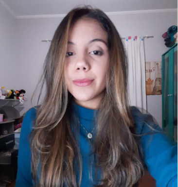

Apresentação

Meu nome é Rafaella Batista dos Santos, tenho 19 anos, sou formada como técnica em Edificações
pela ETEC Fernando Prestes e estou cursando Arquitetura e Urbanismo na Facens.
Sou uma pessoa extrovertida, curiosa e criativa. Busco sempre produzir meus trabalhos com
perfeição e muita dedicação.
Espero futuramente projetar espaços que possam transmitir significados, utilazando técnicas
inovadoras.
Habilidades
- Pacote Office - Intermediário
- SketchUp - Intermediário
- AutoCAD - Intermediário
- Revit - intermediário
- Inglês - básico
- Espanhol - básico
Experiências acadêmicas
- 2019: Solução Inovadora para Mobilidade - Domínio de uma Tecnologia por Brasileiros
Associação dos Engenheiros e Arquitetos de Sorocaba
- 2020: Projetação
Abrigos emergenciais
- 2020: Mesa aberta: Arquitetando o Ensino
USF Campinas
- 2020: Tempo e Espaço: A ampliação do Moderno no Brasil
Do.co.mo.mo Renato Gama-Rosa
- 2020: Roteiro de Reconhecimento e Distinção do Patrimônio Moderno de Sorocaba
Do.co.mo.mo Taina e João
- 2021: Utilização de Serragem de Madeira como Substituto Parcial e Total do Agregado Miúdo em Argamassas para Revestimento
Projeto de Iniciação Científica